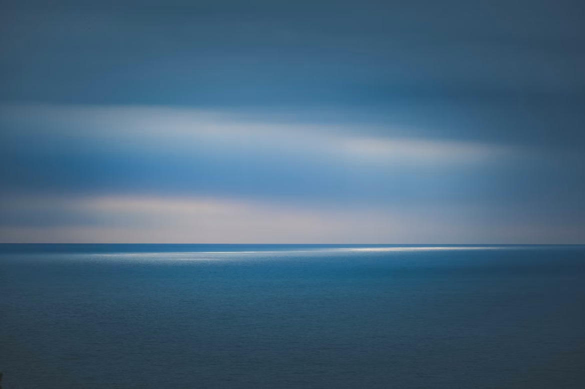

Freedom
Para que possamos ser livres, somos escravos das leis.
É mais difícil ser livre do que puxar a uma carroça. Isto é tão evidente que receio ofender-vos. Porque puxar uma carroça é ser puxado por ela pela razão de haver ordens para puxar, ou haver carroça para ser puxada. Ou ser mesmo um passatempo passar o tempo puxando. Mas ser livre é inventar a razão de tudo sem haver absolutamente razão nenhuma para nada.
É ser senhor total de si quando se é senhoreado. É darmo-nos inteiramente sem nos darmos absolutamente nada. É ser-se o mesmo, sendo-se outro. É ser-se sem se ser. Assim, pois, tudo é complicado outra vez.
É mesmo possível que sofra aqui e ali de um pouco de engasgamento. Mas só a estupidez se não engasga, ó meritíssimos, na sua forma de ser quadrúpede, como vós o deveis saber.